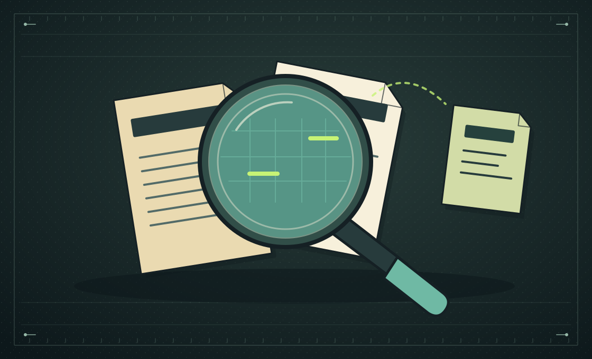

01What I built
I designed the selection, dry-run review and package history interfaces.
02What it enables
An operator can inspect the intended effects before generating a package.
03Tools & methods
ProjectData systems
An export dashboard for selecting records, previewing changes and tracking generated packages.

01What I built
I designed the selection, dry-run review and package history interfaces.
02What it enables
An operator can inspect the intended effects before generating a package.
03Tools & methods